Historia
l'Alcúdia de Crespins y su término municipal de 5'18 km2 se encuentra en el valle del río Cànyoles, y el núcleo urbano emplaza históricamente en un débil montículo que es el que dio la primera parte del topónimo a la población (el sufijo árabe Al Kudya viene a significar esto mismo).
Elemento esencial en la ubicación e historia de l'Alcúdia de Crespins es el Riu Sants (río de los Santos), conocido antiguamente como de San Julián. Este río era considerado por Cavanilles como el más caudaloso del Reino de Valencia, y ha suministrado de manera continua aguas a la población, cultivos y posteriormente a la industria de nuestro pueblo.
Las primeras referencias históricas documentales de l'Alcúdia de Crespins reflejan su origen musulmán: era una antigua alquería que fue entregada en Xàtiva por Jaime I en 1249 y ya aparece en el libro del reparto con el nombre de Alcudiola. Posteriormente, en 1353 sigué vendida a Berenguer de Llombai.
Perteneció luego a los Condes de Orgaz que edificaron un palacio sobre la primitiva alquería. Ya en 1499 Luis Crespí de Valldaura adquiere su posesión, completando la segunda parte del topónimo: Crespins.
Un punto dramático en la historia de Alcudia de Crespins ocurrió en 1609 con la expulsión de los moriscos, gran mayoría de los pobladores de la Alcudia, lo que supone una gran despoblación y falta de mano de obra agraria, lo que hizo que se intentara la repoblación mediante la redacción de la primera Carta Puebla fechada el 16 de agosto de 1611. Esta no fue aceptada, lo que supuso la redacción de una segunda el 10 de enero de 1612. Así, a mediados del s. XVII el lugar no debía albergar más de 30 familias (150-200 habitantes).
El comienzo del s. XIX es un momento de hambre y guerras que implicó una gran mortandad que se fue superando a lo largo de dicho siglo, a pesar de tres brotes de cólera y de constantes guerras internas en España: de los aproximadamente 500 habitantes de 1800 llega a los 780 censados 1857 (año en que llega el tren a la población y que significa el comienzo de una industrialización) y unos 1400 al finalizar la centuria. Evidentemente, este aumento poblacional implicó también un fuerte desarrollo urbano.
Ya en 1950, l'Alcúdia de Crespins es una incipiente villa industrial, y como tal se va dotando de los servicios de una urbe moderna: agua potable, alcantarillado, centro médico... y este carácter industrial fortaleció ya con la democracia gracias a la formación del polígono industrial "El Canari" en los años 90 del s. XX.
Galería de fotos
 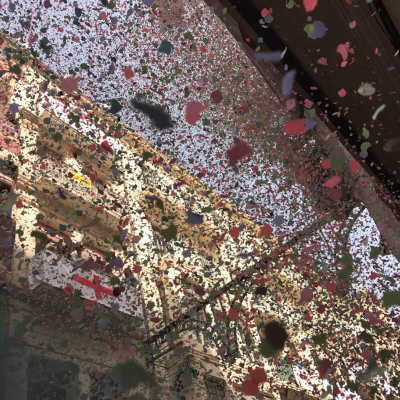
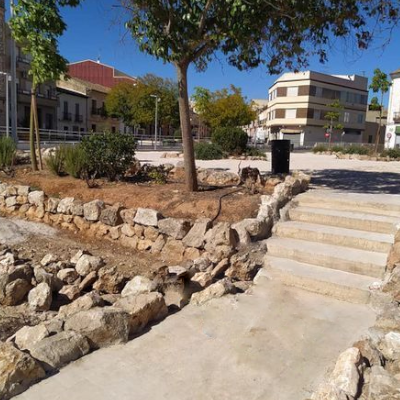
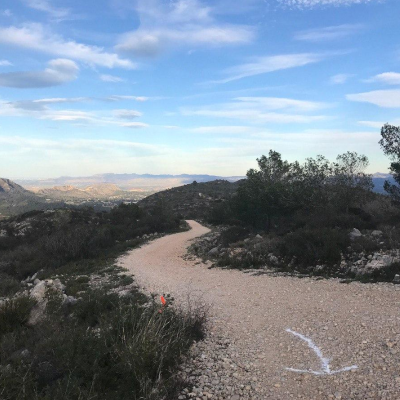
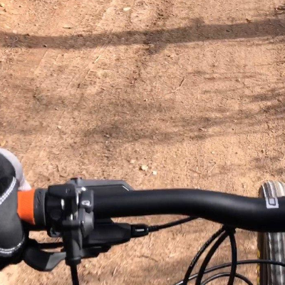
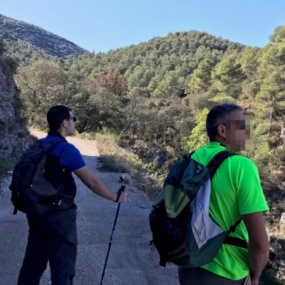
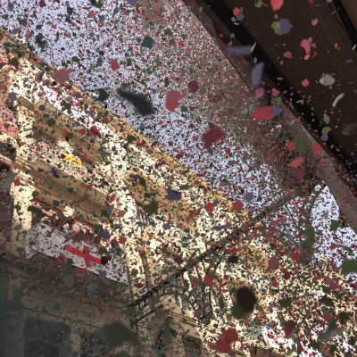
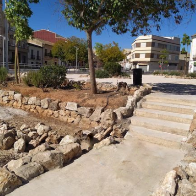
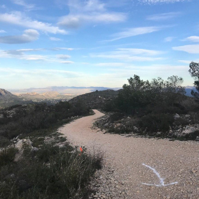
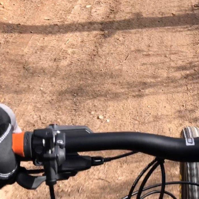
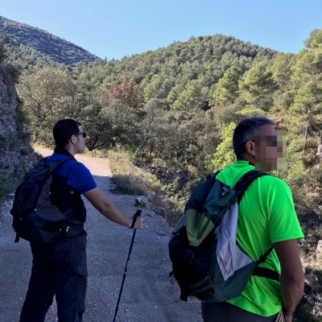
 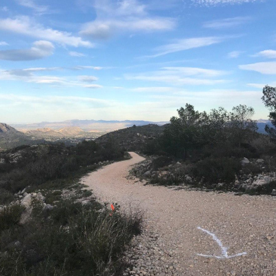
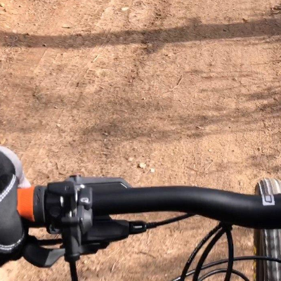
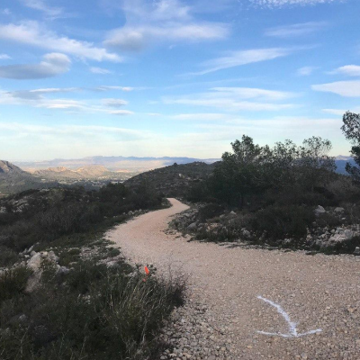
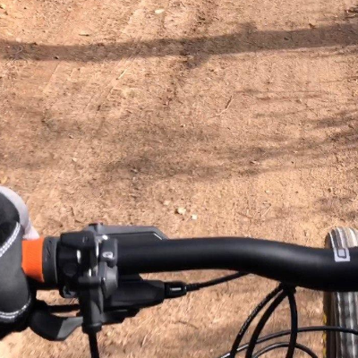
 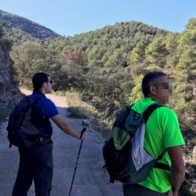
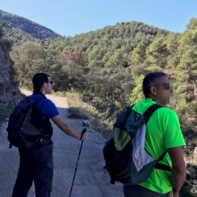